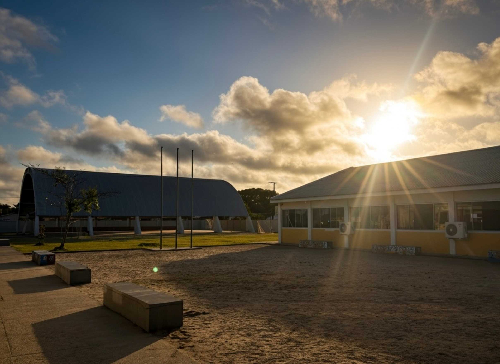

Sobre Nosso Colégio
Quem Somos?
Bem-vindo ao Colégio Estadual Professora Maria Helena Teixeira Luciano! Localizado no balneário de Shangri-lá, em Pontal do Paraná, somos uma instituição de ensino público que se orgulha de servir nossa comunidade com excelência. Oferecemos um ambiente de aprendizado vibrante e preparamos nossos alunos para os desafios do futuro.
Nosso Compromisso com a Educação
Acreditamos que a educação transforma vidas. Nosso compromisso vai além da sala de aula: buscamos inspirar cada estudante a alcançar seu potencial máximo. Combinando conhecimento acadêmico sólido com as habilidades necessárias para a vida, preparamos jovens para tomar decisões com responsabilidade e construir um futuro de sucesso com confiança e autonomia.
Modalidades
Oferecemos um caminho educacional completo, desde os anos finais do Ensino Fundamental até a conclusão do Ensino Médio, com modalidades que atendem a diversas necessidades:
- Ensino Fundamental (Anos Finais): Uma base sólida de conhecimento e desenvolvimento do 6º ao 9º ano.
- Ensino Médio: Preparação completa para os vestibulares e para os próximos passos da vida.
- Educação de Jovens e Adultos (EJA): Uma oportunidade valiosa para quem deseja concluir seus estudos.
Além das modalidades regulares, nosso colégio se destaca por oferecer Cursos Técnicos Profissionalizantes integrados ao Ensino Médio, uma formação de ponta para quem deseja se preparar para o mercado de trabalho.
Nossa Estrutura e Comunidade
Para apoiar o aprendizado, dispomos de uma infraestrutura completa e com equipamentos adequados para o desenvolvimento das atividades pedagógicas. Contamos com um ótimo laboratório de informática, uma biblioteca com computadores para pesquisa e estudo, também temos um laboratório de química e um amplo refeitório que suporta confortavelmente nossos alunos. Acreditamos que a educação é um esforço coletivo e, por isso, a Associação de Pais, Mestres e Funcionários (APMF) é uma parceira essencial em nossa gestão, fortalecendo o vínculo entre o colégio e a comunidade em cada projeto.

O Início de uma História
Nossa jornada começou em fevereiro de 1999, quando o Colégio Estadual Professora Maria Helena Teixeira Luciano foi fundado no balneário de Shangri-lá para oferecer um ensino de qualidade à adolescentes e jovens da região. Desde o início, nosso objetivo foi criar um espaço de crescimento e oportunidade para os jovens da região.
O nome que carregamos é uma homenagem a esta figura inspiradora. Nascida em Paranaguá, Maria Helena Teixeira Luciano (1941-1995) dedicou sua vida ao ensino após se formar em Pedagogia. Sua carreira de sucesso, iniciada após ser aprovada em concurso estadual em 1970, marcou diversas instituições e impactou incontáveis alunos. Casada com Wilson Luciano e mãe de dois filhos, ela deixou um legado de paixão e comprometimento que nos guia até hoje, baseado na crença de que “uma vida se mede pelas alegrias e pelos exemplos que alguém traz aos outros”.